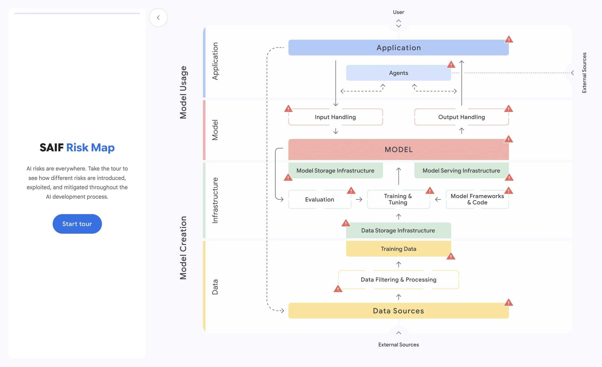
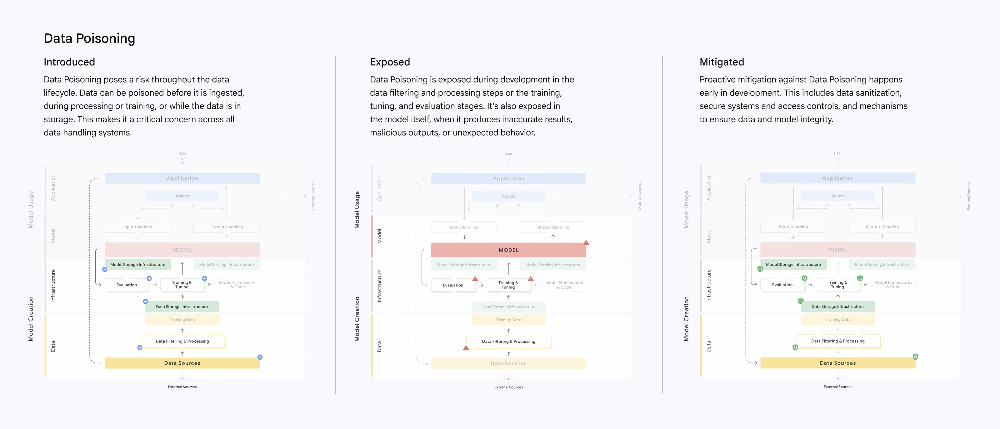
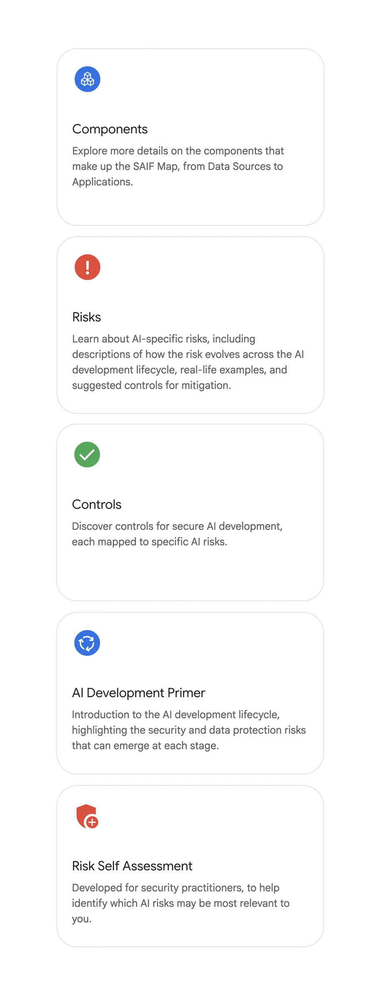
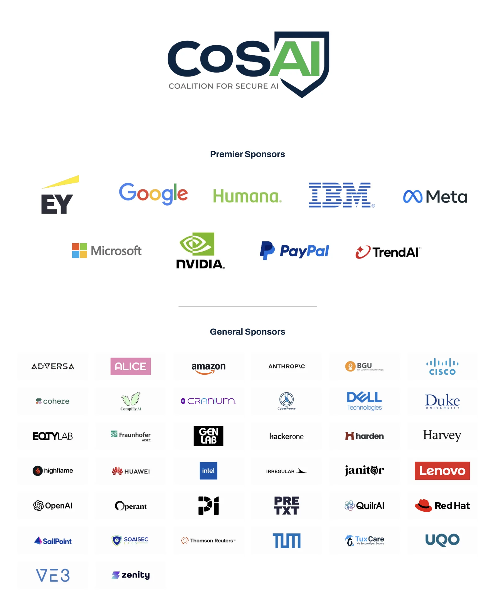

Systems & Information Design
Secure AI Framework Risk Map
How AI gets attacked and defended, turned into one visual map and accepted as an industry reference





About
Google product teams, and the organizations Google works with across the industry, needed a way through the risks to AI systems and the controls for each. The security experts knew both in depth. I directed the design of one visual map of how AI systems get attacked and defended: I set what it had to show and how it should read, a designer on my team drew it, and together we checked it for technical accuracy with Google’s security engineering teams.
The map is the centre of Google’s Secure AI Framework (SAIF). For every risk, from data poisoning to prompt injection, it shows where the risk gets in, where it shows up, and where it can be stopped.
- Role
- Design direction, stakeholder validation
- Scope
- Four layers, 15 risks, 24 controls
- Used by
- Google product teams; Privacy, Safety & Security; Coalition for Secure AI (CoSAI)
- See it
- saif.google · CoSAI
Donated the risk map to the Coalition for Secure AI, where it is maintained as a shared reference across the industry.